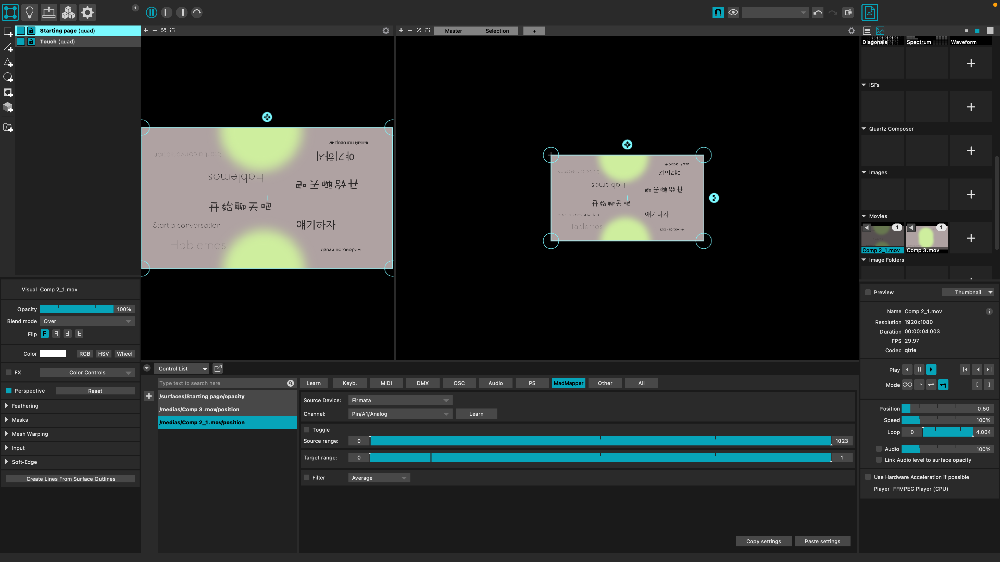

After effect project snapshot
Madmapper project snapshot
The project is mainly based on my previous research on loneliness problem from college student. Many freshmen are having hard time meeting new friends and finding a sense of belonging. So my project is aiming to create a smart and interactive table that will help students on campus better connect to each other. This table will sense the closeness of students and become a conversation starter. I used capacitive sensing to achieve the distant sensing on both side. And I used Firmata library to send the capacitive sensing signal And I made the projection video in after effects. I finally mapped the project video using madmapper. After connecting the Firmata with madmapper. Madmapper can direct read the analog data from the board. There are two layers of the video. One for default state. This one will play in loop. And the transparency is controlled by the analog data. When analog data isn’t 0(actually the resting number is 100ish), this video will fade away. Then it will show a different video. This one’s play position is mapped to the analog pin data. When the number rises, it will play the video forwards. Similarly, when both of the hand removed from the table, the video will play backwards showing dots moved away. The tin foils are put behind the table and connect to the mother board also connect to the laptop.
Here is all the documentation for assignment 6
My schematic, I used 10M Ome for the resistance on each side for capacitive sensing based on the capacitive sensing chart
My code:
#include